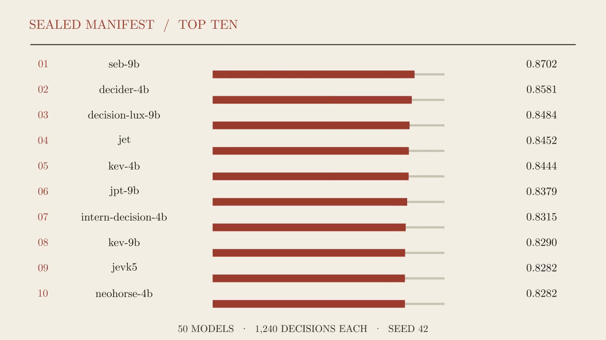

One sealed manifest
1,190 cases and 1,550 typed questions, checksum verified before every run. No model sees a different question set.
Dataset 2.1.0 · independent · no affiliation
One input · every model · one metric
Self-reported scores are not comparable, because each one comes from its own prompt. We ignore them. Every model here is run by us against the same cases at seed 42, with inputs verified byte-identical before a number is read.
Best open-weights · evaluation accuracy
—
— open weights
— behind the closed API reference

01 / The field
Every row is an independent run against — evaluation decisions. The nine marks beside a name are that model's suite accuracies. Technique reimplementations are our reading of a published method over a public base checkpoint, not the authors' code.
02 / The evidence
Aggregate accuracy hides the shape of a model. Pick one to see its nine suites, or compare the top five in each suite.
Nine suites · — decisions
Every measured model against every suite, in score order.
03 / The confound
One model was measured on two hosts against identical bytes and one pinned revision, so the difference does not have to be assumed away.
Same manifest, same revision.
04 / The audit
Coverage is derived from finished run directories by a script, never by hand. The audit verifies checksums, fingerprints evaluation answers and collapses runs that cannot be told apart.
Repeated runs are counted once.
05 / The method
1,190 cases and 1,550 typed questions, checksum verified before every run. No model sees a different question set.
Each row records a full 40-character revision, with base model and base revision for adapter and technique entries.
Device, dtype, serving mode and the scoring readout actually used. Technique entries carry an explicit flag.
Each run ships a checksum manifest over its own artifacts. Every figure traces back to a directory that verifies.
A script computes the headline count from artifacts and detects identical predictions. The number is generated, not maintained.
The panel was assembled from public releases, model cards and published work. No third-party leaderboard was used as input.

06 / The record
Every number, chart and table on this page is rendered from data/results.json. Nothing is typed by hand.
uv sync --extra qwen --extra vendor
python run.py --models seb-9b \
--manifest datasets/v2/manifest.v2.1.0.jsonl \
--manifest-checksum datasets/v2/manifest.v2.1.0.sha256
python ops/panel_coverage.py --results-root results/rawsha256 —
logical digest —
— cases · — evaluation · — decisions · seed —
llms.txt is the short summary and llms-full.txt carries every result and caveat in one document. Both are generated from the same data.
This page ships JSON-LD for the dataset, publisher and FAQ, with method facts only so it does not go stale when a model is added.
The acceptance checklist and per-model VRAM estimates live in docs/panel-hardware-requirements.md in the repository.